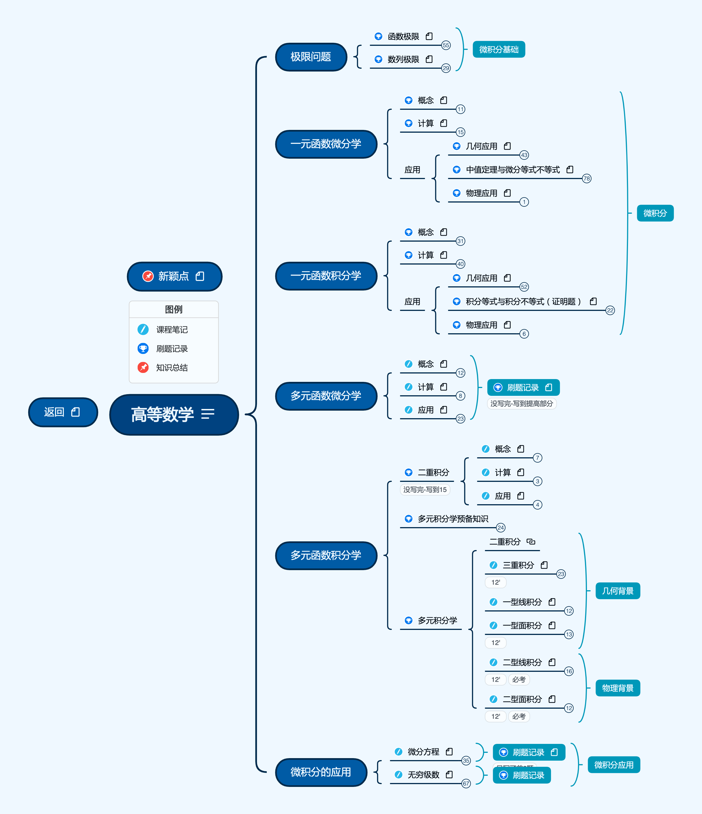

2022.6.23

预备知识
极限问题
一元函数微分学
一元函数积分学
多元函数微分学
多元函数积分学
微积分的应用
按照张宇2022与2023考研数学提高班进行归纳与整合。
链接: https://pan.baidu.com/s/1mFy2Y7eLtRVwZMGfbkrxiQ提取码: FX7U如果资源失效请联系我
按照2022张宇考研课程进行整理，完成全部知识框架搭建
按照2023张宇基础30讲进行重新学习